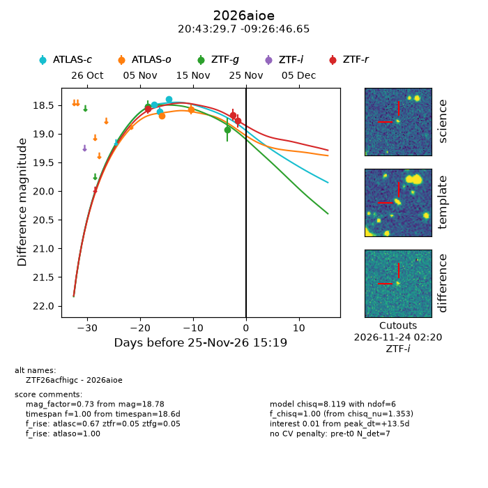
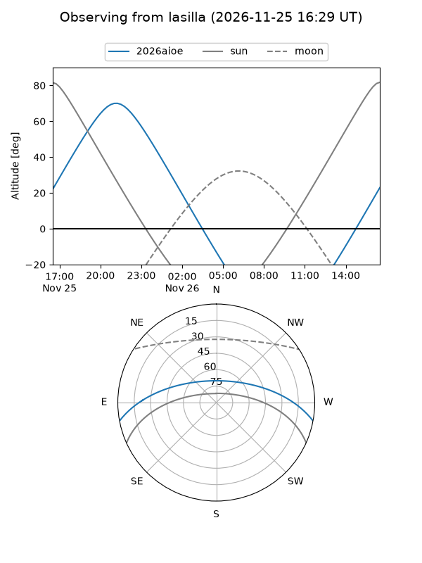
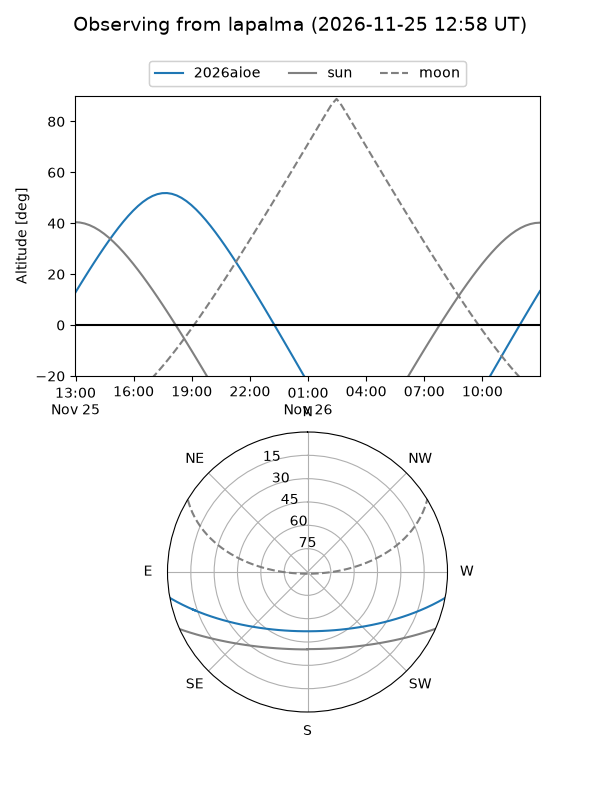
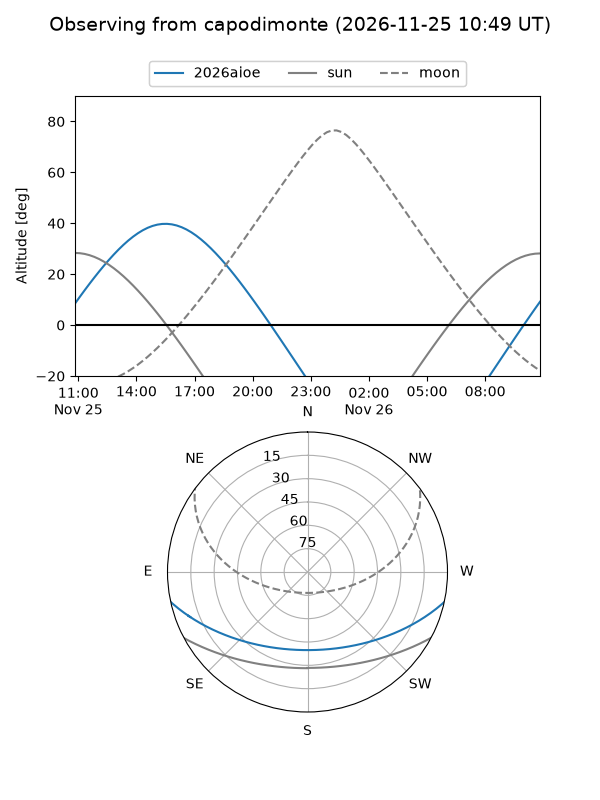
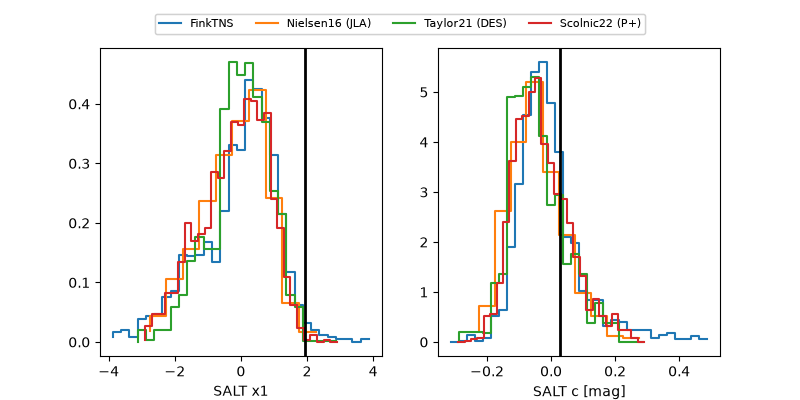

2026aioe
Target 2026aioe at 2026-11-26 03:11
Aliases and brokers:
FINK-ZTF: ztf.fink-portal.org/ZTF26acfhigc
Lasair-ZTF: lasair-ztf.lsst.ac.uk/objects/ZTF26acfhigc
ALeRCE-ZTF: alerce.online/object/ZTF26acfhigc
YSE-PZ: ziggy.ucolick.org/yse/transient_detail/2026aioe
TNS name: wis-tns.org/object/2026aioe
Direct TNS query: direct search
alt names
ZTF26acfhigc (ztf,fink_ztf)
2026aioe (tns,yse)
Coordinates:
equatorial (ra, dec) = 310.8738,-9.44629
equatorial (HMS+DMS) = 20:43:29.72,-09:26:46.65
galactic (l, b) = (37.2136,-29.15604)
Flags:
peak dt: +14.0
Photometry:
last atlasc=18.40, atlaso=18.57, ztfg=18.93, ztfr=18.78
4 atlasc, 2 atlaso, 2 ztfg, 3 ztfr detections
Lightcurve

Visibility



Additional plots
